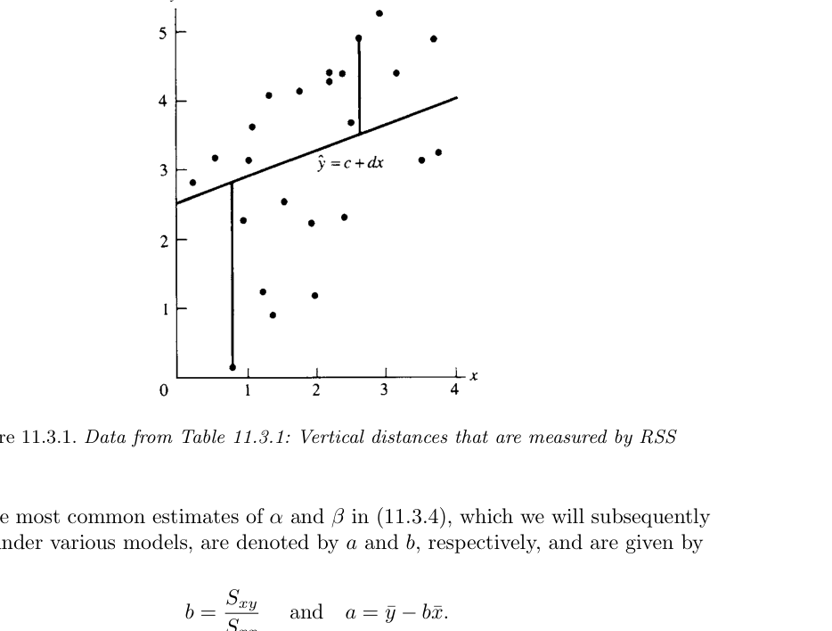
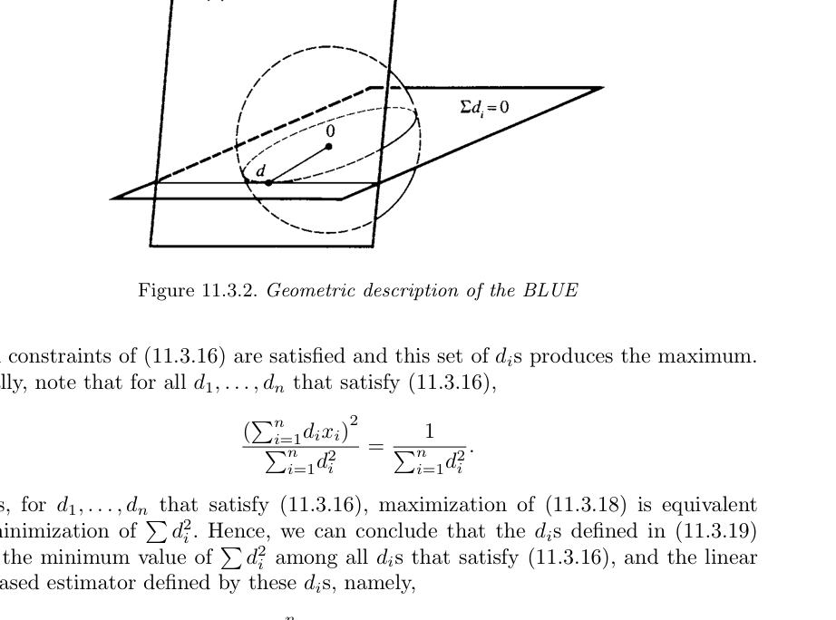
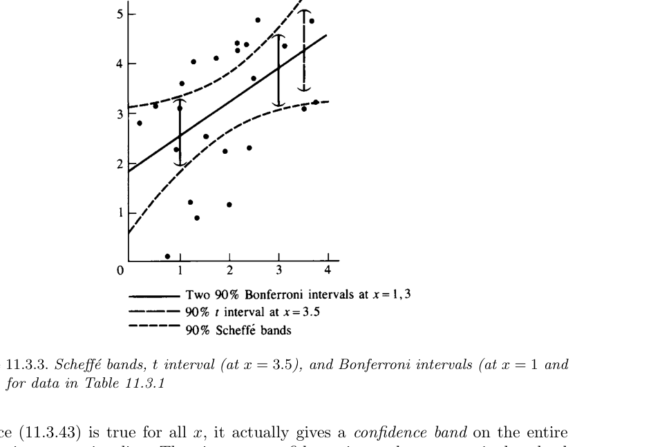

11 분산분석과 회귀
“I’ve wasted time enough,” said Lestrade rising. “I believe in hard work and not in sitting by the fire spinning fine theories.”
— Inspector Lestrade, The Adventure of the Noble Bachelor
- 지금까지는 보통 하나의 확률변수를 하나의 pdf 또는 pmf로 모형화하고, 그 분포가 갖는 미지 모수를 추정하는 문제를 다루었다.
- 하지만 실제 통계자료에서는 반응변수가 단독으로 존재하지 않는 경우가 많다.
- 반응변수는 알려져 있거나, 통제 가능하거나, 관측 가능한 다른 변수와 함께 나타난다.
- 이 장에서는 그런 상황을 다루는 두 가지 핵심 방법을 공부한다.
- 분산분석(analysis of variance, ANOVA)
- 회귀분석(regression analysis)
- 두 방법은 모두 선형 구조를 기반으로 한다.
- ANOVA는 이름과 달리 “분산 자체”를 분석하기보다, 여러 집단 평균의 차이를 설명하는 변동의 분해에 초점을 둔다.
- 회귀분석은 한 변수의 평균이 다른 변수에 따라 어떻게 변하는지를 모형화한다.
11.1 도입
11.1.1 ANOVA의 핵심 생각
- ANOVA의 기본 아이디어는 전체 변동을 여러 원천으로 나누는 것이다.
- 특히 한 요인(one factor)이 여러 수준 또는 처리(treatment)를 가질 때, 각 처리의 평균이 서로 다른지를 분석한다.
- 이 장에서는 가장 기본적인 일원분산분석(oneway ANOVA)을 다룬다.
- 고전적 ANOVA는 주로 다음 귀무가설을 검정하는 데 초점을 두었다.
\[ H_0:\theta_1=\theta_2=\cdots=\theta_k. \]
- 하지만 실제 실험에서는 “모든 처리 평균이 정확히 같다”는 가설 자체가 별로 흥미롭지 않을 수 있다.
- 더 중요한 질문은 다음과 같다.
- 어떤 처리가 더 큰 평균을 갖는가?
- 특정 처리와 대조군의 차이는 얼마나 큰가?
- 여러 처리 평균 사이의 의미 있는 비교는 무엇인가?
- 평균 차이에 대한 신뢰구간은 어떻게 구성하는가?
11.1.2 회귀분석의 핵심 생각
- 회귀분석은 한 변수의 평균이 다른 변수에 따라 어떻게 변하는지를 설명한다.
- 단순선형회귀에서는 반응변수 \(Y\)의 평균이 관측 가능한 변수 \(x\)의 선형함수라고 가정한다.
\[ EY=\alpha+\beta x. \]
- 이때 \(EY\)를 \(x\)의 함수로 나타내는 함수를 모집단 회귀함수(population regression function)라고 한다.
- 단순선형회귀의 목표는 다음과 같다.
- 직선 관계를 자료에 맞춘다.
- 절편 \(\alpha\)와 기울기 \(\beta\)를 추정한다.
- 기울기가 0인지 검정한다.
- 특정 \(x_0\)에서 평균 반응을 추정한다.
- 새로운 관측값을 예측한다.
- 회귀직선 전체에 대한 신뢰밴드를 구성한다.
11.2 일원분산분석
11.2.1 기본 모형
- 일원분산분석에서는 \(k\)개의 처리 또는 집단이 있다고 하자.
- 처리 \(i\)에서 \(n_i\)개의 관측값을 얻는다.
- 관측값을 \(Y_{ij}\)로 쓴다.
\[ Y_{ij}=\theta_i+\epsilon_{ij}, \qquad i=1,\ldots,k,\quad j=1,\ldots,n_i. \tag{11.2.1} \]
- 여기서
- \(\theta_i\)는 처리 \(i\)의 평균이다.
- \(\epsilon_{ij}\)는 오차항이다.
- \(E\epsilon_{ij}=0\)이면 \(EY_{ij}=\theta_i\)이다.
- 따라서 \(\theta_i\)는 treatment mean, 즉 처리평균이다.
- 각 처리에서 표본 수 \(n_i\)가 반드시 같을 필요는 없다.
11.2.2 예제: 독소와 물고기 간 손상 자료
- 어떤 송어 종에서 세 독소와 대조군이 간 손상에 미치는 영향을 비교하는 실험을 생각한다.
- 관측값은 희생된 물고기의 간 손상 정도이다.
| Toxin 1 | Toxin 2 | Toxin 3 | Control |
|---|---|---|---|
| 28 | 33 | 18 | 11 |
| 23 | 36 | 21 | 14 |
| 14 | 34 | 20 | 11 |
| 27 | 29 | 22 | 16 |
| 31 | 24 | ||
| 34 |
- 이 자료에서 처리 수준은 네 개이다.
- 각 처리의 평균을 비교하면 독소마다 평균 손상 정도가 다른지 평가할 수 있다.
- 하지만 중요한 점은 단순히 “모든 평균이 같은가”가 아니라, 어떤 독소가 얼마나 큰 효과를 갖는지 정량화하는 것이다.
11.2.3 과매개화 모형
- 같은 상황을 다음과 같이 쓸 수도 있다.
\[ Y_{ij}=\mu+\tau_i+\epsilon_{ij}, \qquad i=1,\ldots,k,\quad j=1,\ldots,n_i. \tag{11.2.2} \]
- 여기서
- \(\mu\)는 전체 평균 수준(grand mean)으로 해석된다.
- \(\tau_i\)는 처리 \(i\)의 효과, 즉 전체 평균으로부터의 편차로 해석된다.
- 이 모형에서는
\[ EY_{ij}=\mu+\tau_i. \]
- 하지만 이 모형은 제한이 없으면 식별 가능하지 않다.
- 예를 들어 \(\mu\)에 상수를 더하고 모든 \(\tau_i\)에서 같은 상수를 빼도 \(\mu+\tau_i\)는 변하지 않는다.
11.2.3.1 정의: 식별 가능성
- 분포족 \(\{f(x\mid\theta):\theta\in\Theta\}\)에서 모수 \(\theta\)가 식별 가능(identifiable)하다는 것은 서로 다른 모수값이 서로 다른 pdf 또는 pmf를 만든다는 뜻이다.
- 즉,
\[ \theta\ne\theta' \quad\Rightarrow\quad f(x\mid\theta)\ne f(x\mid\theta') \]
이어야 한다.
- 식별 가능성은 추정량의 성질이 아니라 모형의 성질이다.
- 모형이 식별 가능하지 않으면 같은 자료분포를 여러 모수값이 설명할 수 있으므로 추론이 어렵다.
11.2.4 식별 가능성 문제의 해결
- 과매개화 모형에서는 흔히 다음 제약을 둔다.
\[ \sum_{i=1}^{k}\tau_i=0. \]
- 이 제약은 자유모수의 수를 \(k+1\)개에서 \(k\)개로 줄인다.
- 또한 \(\tau_i\)를 전체 평균으로부터의 편차로 해석할 수 있게 한다.
- 그러나 이 장에서는 해석이 더 직접적인 cell means model, 즉 식 (11.2.1)을 주로 사용한다.
11.3 모형 및 분포 가정
11.3.1 고전적 일원 ANOVA 가정
- 일원 ANOVA에서 관측값은
\[ Y_{ij}=\theta_i+\epsilon_{ij} \]
를 따른다고 가정한다.
- 고전적 ANOVA 가정은 다음과 같다.
- 평균과 분산 조건
\[ E\epsilon_{ij}=0, \qquad Var(\epsilon_{ij})=\sigma_i^2<\infty. \]
- 서로 다른 오차항은 공분산이 0이다.
\[ Cov(\epsilon_{ij},\epsilon_{i'j'})=0 \]
단, 같은 관측값인 경우는 제외한다.
- 정규 오차
\[ \epsilon_{ij}\ \text{are independent and normally distributed}. \]
- 등분산성
\[ \sigma_i^2=\sigma^2 \qquad \text{for all } i. \]
- 등분산성은 homoscedasticity라고도 한다.
11.3.2 가정의 의미
- 정규성 가정이 없으면 점추정은 가능할 수 있지만, 정확한 t 검정이나 F 검정, 신뢰구간을 만들기 어렵다.
- 표본 수가 충분하고 모집단이 심하게 비대칭이 아니면 중심극한정리에 의존할 수 있다.
- 등분산성은 ANOVA에서 특히 중요하다.
- 정규성 위반보다 등분산성 위반이 더 큰 문제를 만들 수 있다.
- 자료가 ANOVA 가정을 심하게 위반하면 보통 비선형 변환을 먼저 고려한다.
- 제곱근 변환
- 로그 변환
- arcsine 변환
- Box–Cox 변환
11.4 고전적 ANOVA 가설
11.4.1 ANOVA 귀무가설
- 고전적 ANOVA 검정은 다음 가설을 다룬다.
\[ H_0:\theta_1=\theta_2=\cdots=\theta_k \]
대
\[ H_1:\theta_i\ne\theta_j\ \text{for some } i,j. \tag{11.2.3} \]
- \(H_1\)은 모든 평균이 서로 다르다는 뜻이 아니다.
- 적어도 두 평균이 다르다는 뜻이다.
11.4.2 왜 이 가설은 항상 충분하지 않은가?
- 실제 실험자는 대개 모든 처리 평균이 정확히 같다고 믿지 않는다.
- 실험의 목적은 보통 다음과 같다.
- 처리 효과의 크기를 추정한다.
- 처리들을 순서화한다.
- 대조군과 처리군을 비교한다.
- 특정 조합의 평균 차이를 검토한다.
11.4.3 예제: 비료와 시금치의 아연 함량
- 다섯 가지 비료 처리가 시금치의 아연 함량에 미치는 영향을 조사한다고 하자.
| Treatment | Magnesium | Potassium | Zinc |
|---|---|---|---|
| 1 | 0 | 0 | 0 |
| 2 | 0 | 200 | 0 |
| 3 | 50 | 200 | 0 |
| 4 | 200 | 200 | 0 |
| 5 | 0 | 200 | 15 |
- 이 경우 실험자는 다섯 처리의 효과가 완전히 같다고 생각하지 않는다.
- 관심은 다음과 같은 구체적 비교에 있다.
- 칼륨 추가 효과
- 마그네슘 양 증가 효과
- 아연 추가 효과
- 대조군과 처리군 평균 차이
11.5 선형결합과 대비
11.5.1 정의: 선형결합과 대비
- \(t=(t_1,\ldots,t_k)\)가 모수 또는 통계량이고 \(a=(a_1,\ldots,a_k)\)가 알려진 상수라고 하자.
- 다음 형태를 선형결합(linear combination)이라고 한다.
\[ \sum_{i=1}^{k}a_it_i. \tag{11.2.4} \]
- 추가로 계수합이 0이면, 즉
\[ \sum_{i=1}^{k}a_i=0 \]
이면 이를 대비(contrast)라고 한다.
11.5.2 대비의 예
- 처리 1과 처리 2를 비교하려면
\[ a=(1,-1,0,\ldots,0) \]
를 사용한다. - 그러면 대비는
\[ \sum_{i=1}^{k}a_i\theta_i=\theta_1-\theta_2. \]
- 처리 1을 처리 2와 3의 평균과 비교하려면
\[ a=\left(1,-\frac12,-\frac12,0,\ldots,0\right) \]
를 사용한다. - 이 대비는
\[ \theta_1-\frac12\theta_2-\frac12\theta_3 \]
이다.
11.5.3 정리: ANOVA 귀무가설과 대비
- 임의의 \(\theta=(\theta_1,\ldots,\theta_k)\)에 대해 다음은 동치이다.
\[ \theta_1=\theta_2=\cdots=\theta_k \]
\[ \Longleftrightarrow \]
\[ \sum_{i=1}^{k}a_i\theta_i=0 \quad \text{for all } a \text{ such that } \sum_{i=1}^{k}a_i=0. \]
11.5.3.1 증명 아이디어
- 모든 \(\theta_i\)가 같은 값 \(\theta\)라면
\[ \sum_{i=1}^{k}a_i\theta_i = \theta\sum_{i=1}^{k}a_i = 0. \]
- 반대로 모든 대비가 0이면 다음 대비들을 생각한다.
\[ (1,-1,0,\ldots,0), \quad (0,1,-1,0,\ldots,0), \quad \ldots, \quad (0,\ldots,0,1,-1). \]
- 이 대비들이 모두 0이면
\[ \theta_1=\theta_2,\quad \theta_2=\theta_3,\quad \ldots,\quad \theta_{k-1}=\theta_k \]
이므로 모든 평균이 같다.
11.6 평균의 선형결합에 대한 추론
11.6.1 처리별 표본평균
- ANOVA 가정 아래에서
\[ Y_{ij}\sim N(\theta_i,\sigma^2). \]
- 처리 \(i\)의 표본평균은
\[ \bar Y_{i\cdot} = \frac1{n_i}\sum_{j=1}^{n_i}Y_{ij} \]
이고,
\[ \bar Y_{i\cdot}\sim N\left(\theta_i,\frac{\sigma^2}{n_i}\right). \]
- 점 표기법에서 \(\cdot\)은 해당 첨자에 대해 합을 취했다는 뜻이다.
- 전체 표본 수는
\[ N=\sum_{i=1}^{k}n_i. \]
- 전체 평균 또는 grand mean은
\[ \bar{\bar Y} = \frac1N \sum_{i=1}^{k}\sum_{j=1}^{n_i}Y_{ij} = \frac1N\sum_{i=1}^{k}n_i\bar Y_{i\cdot}. \]
11.6.2 선형결합의 분포
- 임의의 상수 \(a=(a_1,\ldots,a_k)\)에 대해
\[ \sum_{i=1}^{k}a_i\bar Y_{i\cdot} \]
는 정규분포를 따른다.
- 평균은
\[ E\left(\sum_{i=1}^{k}a_i\bar Y_{i\cdot}\right) = \sum_{i=1}^{k}a_i\theta_i. \]
- 분산은
\[ Var\left(\sum_{i=1}^{k}a_i\bar Y_{i\cdot}\right) = \sigma^2\sum_{i=1}^{k}\frac{a_i^2}{n_i}. \]
- 따라서 \(\sigma^2\)를 알고 있으면 표준정규 통계량을 만들 수 있다.
11.6.3 pooled variance
- 일반적으로 \(\sigma^2\)는 알려져 있지 않다.
- 처리 \(i\)의 표본분산을
\[ S_i^2= \frac1{n_i-1} \sum_{j=1}^{n_i} (Y_{ij}-\bar Y_{i\cdot})^2 \]
라고 하자.
- 모든 처리의 공통분산을 추정하기 위해 pooled estimator를 사용한다.
\[ S_p^2 = \frac1{N-k} \sum_{i=1}^{k}(n_i-1)S_i^2 = \frac1{N-k} \sum_{i=1}^{k}\sum_{j=1}^{n_i} (Y_{ij}-\bar Y_{i\cdot})^2. \tag{11.2.5} \]
- ANOVA 가정 아래에서
\[ \frac{(N-k)S_p^2}{\sigma^2} \sim \chi^2_{N-k}. \]
- 또한 \(S_p^2\)는 각 \(\bar Y_{i\cdot}\)와 독립이다.
11.6.4 t 통계량
- 따라서 다음 통계량은 Student t 분포를 따른다.
\[ \frac{ \sum_{i=1}^{k}a_i\bar Y_{i\cdot} - \sum_{i=1}^{k}a_i\theta_i }{ \sqrt{S_p^2\sum_{i=1}^{k}a_i^2/n_i} } \sim t_{N-k}. \tag{11.2.6} \]
11.6.5 단일 선형결합 검정
- 다음 가설을 검정한다고 하자.
\[ H_0:\sum_{i=1}^{k}a_i\theta_i=0 \]
대
\[ H_1:\sum_{i=1}^{k}a_i\theta_i\ne0. \]
- 유의수준 \(\alpha\)에서 기각역은
\[ \left| \frac{ \sum_{i=1}^{k}a_i\bar Y_{i\cdot} }{ \sqrt{S_p^2\sum_{i=1}^{k}a_i^2/n_i} } \right| > t_{N-k,\alpha/2}. \tag{11.2.7} \]
11.6.6 선형결합의 신뢰구간
- 식 (11.2.6)을 피벗으로 사용하면 다음 \(100(1-\alpha)\%\) 신뢰구간을 얻는다.
\[ \sum_{i=1}^{k}a_i\bar Y_{i\cdot} - t_{N-k,\alpha/2} \sqrt{S_p^2\sum_{i=1}^{k}\frac{a_i^2}{n_i}} \le \sum_{i=1}^{k}a_i\theta_i \]
\[ \le \sum_{i=1}^{k}a_i\bar Y_{i\cdot} + t_{N-k,\alpha/2} \sqrt{S_p^2\sum_{i=1}^{k}\frac{a_i^2}{n_i}}. \tag{11.2.8} \]
11.6.7 예제: ANOVA 대비
- 처리 1과 처리 2를 비교하려면 \(a=(1,-1,0,\ldots,0)\)이다.
- 검정통계량은
\[ \frac{\bar Y_{1\cdot}-\bar Y_{2\cdot}} { \sqrt{S_p^2(1/n_1+1/n_2)} } \]
이다.
- 처리 1을 처리 2와 3의 평균과 비교하려면
\[ a=\left(1,-\frac12,-\frac12,0,\ldots,0\right) \]
이고 검정통계량은
\[ \frac{ \bar Y_{1\cdot} -\frac12\bar Y_{2\cdot} -\frac12\bar Y_{3\cdot} }{ \sqrt{ S_p^2 \left( \frac1{n_1} + \frac1{4n_2} + \frac1{4n_3} \right) } }. \]
- 이런 대비들을 잘 선택하면 처리 평균들의 의미 있는 구조를 파악할 수 있다.
- 단, 여러 대비를 동시에 검토하면 전체 유의수준 관리가 필요하다.
11.7 ANOVA F 검정
11.7.1 Union–intersection 관점
- ANOVA 귀무가설은 모든 대비가 0이라는 가설과 동치이다.
\[ H_0: \sum_{i=1}^{k}a_i\theta_i=0 \quad \text{for all } a \text{ with } \sum a_i=0. \]
- 대립가설은 어떤 대비 하나 이상이 0이 아니라는 것이다.
\[ H_1: \sum_{i=1}^{k}a_i\theta_i\ne0 \quad \text{for some } a. \]
- 따라서 ANOVA F 검정은 모든 대비에 대한 t 검정을 동시에 고려하는 union–intersection test로 볼 수 있다.
11.7.2 대비 t 통계량의 최대화
- 대비 \(a\)에 대한 통계량을
\[ T_a = \left| \frac{ \sum_{i=1}^{k}a_i\bar Y_{i\cdot} - \sum_{i=1}^{k}a_i\theta_i }{ \sqrt{S_p^2\sum_{i=1}^{k}a_i^2/n_i} } \right| \tag{11.2.9} \]
라고 하자.
- 모든 대비 중 \(T_a^2\)를 최대화하면 ANOVA F 통계량이 나온다.
11.7.3 정리
- \(T_a\)가 식 (11.2.9)로 정의될 때
\[ \sup_{\sum a_i=0}T_a^2 = \frac{ \sum_{i=1}^{k}n_i \left[ (\bar Y_{i\cdot}-\bar{\bar Y}) - (\theta_i-\bar\theta) \right]^2 }{ S_p^2 }, \tag{11.2.12} \]
여기서
\[ \bar\theta= \frac1N\sum_{i=1}^{k}n_i\theta_i. \]
- ANOVA 가정 아래에서
\[ \frac1{k-1} \sup_{\sum a_i=0}T_a^2 \sim F_{k-1,N-k}. \tag{11.2.13} \]
11.7.4 ANOVA F 통계량
- 귀무가설 \(H_0:\theta_1=\cdots=\theta_k\)가 참이면 \(\theta_i-\bar\theta=0\)이다.
- 따라서 검정통계량은
\[ F = \frac{ \sum_{i=1}^{k}n_i(\bar Y_{i\cdot}-\bar{\bar Y})^2/(k-1) }{ S_p^2 }. \]
- 유의수준 \(\alpha\)에서 기각역은
\[ F>F_{k-1,N-k,\alpha}. \]
- 분자는 처리 간 변동, 분모는 처리 내 변동을 나타낸다.
- 처리 간 변동이 처리 내 변동에 비해 충분히 크면 평균들이 모두 같다는 가설을 기각한다.
11.8 대비의 동시추정
11.8.1 Bonferroni 방법
- \(m\)개의 신뢰구간을 동시에 만들고 전체 신뢰수준을 적어도 \(1-\alpha\)로 유지하려면 각 개별 구간을 \(1-\alpha/m\) 수준으로 만들 수 있다.
- 이는 Bonferroni 부등식에 근거한다.
- ANOVA에서 모든 쌍별 차이는 총
\[ \frac{k(k-1)}2 \]
개이다.
- 모든 쌍별 차이에 대해 동시에 \(1-\alpha\) 신뢰수준을 보장하려면 각 t 구간의 유의수준을 조정한다.
11.8.2 Scheffé 방법
- Scheffé 방법은 모든 대비에 대해 동시에 유효한 신뢰구간을 제공한다.
- \(A=\{a=(a_1,\ldots,a_k):\sum a_i=0\}\)라고 하자.
- 다음 값을 정의한다.
\[ M=\sqrt{(k-1)F_{k-1,N-k,\alpha}}. \]
- 그러면 다음 구간들이 모든 대비에 대해 동시에 \(1-\alpha\) 신뢰수준을 갖는다.
\[ \sum_{i=1}^{k}a_i\bar Y_{i\cdot} - M\sqrt{S_p^2\sum_{i=1}^{k}\frac{a_i^2}{n_i}} \le \sum_{i=1}^{k}a_i\theta_i \]
\[ \le \sum_{i=1}^{k}a_i\bar Y_{i\cdot} + M\sqrt{S_p^2\sum_{i=1}^{k}\frac{a_i^2}{n_i}}. \]
- Scheffé 방법의 장점:
- 모든 대비를 동시에 다룰 수 있다.
- 자료를 본 뒤 관심 대비를 선택해도 정당한 추론이 가능하다.
- data snooping에 대해 상대적으로 안전하다.
- 단점:
- 구간이 길다.
- 단일 대비 t 구간보다 보수적이다.
- 관심 대비가 적으면 Bonferroni 방법이 더 짧을 수 있다.
11.8.3 Scheffé 구간이 더 넓은 이유
- 모든 \(\nu,\alpha,k\)에 대해 다음 부등식이 성립한다.
\[ t_{\nu,\alpha/2} \le \sqrt{(k-1)F_{k-1,\nu,\alpha}}. \]
- 따라서 Scheffé 구간은 단일 대비 t 구간보다 항상 넓다.
- 이는 더 강한 동시추론을 보장하기 위해 지불하는 비용이다.
11.9 제곱합의 분해
11.9.1 정리: ANOVA 제곱합 항등식
- 임의의 수 \(y_{ij}\)에 대해 다음 항등식이 성립한다.
\[ \sum_{i=1}^{k}\sum_{j=1}^{n_i} (y_{ij}-\bar{\bar y})^2 = \sum_{i=1}^{k}n_i(\bar y_{i\cdot}-\bar{\bar y})^2 + \sum_{i=1}^{k}\sum_{j=1}^{n_i} (y_{ij}-\bar y_{i\cdot})^2. \tag{11.2.15} \]
- 왼쪽은 전체 변동이다.
- 오른쪽 첫 번째 항은 처리 간 변동이다.
- 오른쪽 두 번째 항은 처리 내 변동 또는 오차 변동이다.
11.9.2 용어
- Total sum of squares:
\[ SST= \sum_{i=1}^{k}\sum_{j=1}^{n_i} (y_{ij}-\bar{\bar y})^2. \]
- Between-treatment sum of squares:
\[ SSB= \sum_{i=1}^{k}n_i(\bar y_{i\cdot}-\bar{\bar y})^2. \]
- Within-treatment sum of squares:
\[ SSW= \sum_{i=1}^{k}\sum_{j=1}^{n_i} (y_{ij}-\bar y_{i\cdot})^2. \]
- 항등식은
\[ SST=SSB+SSW \]
이다.
11.9.3 카이제곱 분해
- ANOVA 가정 아래에서
\[ \frac1{\sigma^2} \sum_{i=1}^{k}\sum_{j=1}^{n_i} (Y_{ij}-\bar Y_{i\cdot})^2 \sim \chi^2_{N-k}. \tag{11.2.16} \]
- 귀무가설이 참이면
\[ \frac1{\sigma^2} \sum_{i=1}^{k}n_i(\bar Y_{i\cdot}-\bar{\bar Y})^2 \sim \chi^2_{k-1}. \tag{11.2.17} \]
- 따라서 F 통계량은 두 독립 카이제곱 확률변수의 비율로 이해된다.
11.9.4 ANOVA 표
| Source of variation | Degrees of freedom | Sum of squares | Mean square | F statistic |
|---|---|---|---|---|
| Between treatment groups | \(k-1\) | \(SSB=\sum n_i(\bar y_i-\bar{\bar y})^2\) | \(MSB=SSB/(k-1)\) | \(F=MSB/MSW\) |
| Within treatment groups | \(N-k\) | \(SSW=\sum\sum(y_{ij}-\bar y_{i\cdot})^2\) | \(MSW=SSW/(N-k)\) | |
| Total | \(N-1\) | \(SST=\sum\sum(y_{ij}-\bar{\bar y})^2\) |
11.9.5 예제: 물고기 독소 자료의 ANOVA 표
| Source of variation | df | Sum of squares | Mean square | F |
|---|---|---|---|---|
| Treatments | 3 | 995.90 | 331.97 | 26.09 |
| Within | 15 | 190.83 | 12.72 | |
| Total | 18 | 1186.73 |
- \(F=26.09\)는 매우 큰 값이다.
- 따라서 독소들이 서로 다른 효과를 낸다는 강한 증거가 있다.
- 다만 F 검정만으로는 어떤 독소가 어느 독소와 다른지 알려주지 않는다.
- 구체적인 비교는 대비와 동시추론 절차를 통해 수행해야 한다.
11.10 단순선형회귀
11.10.1 기본 모형
- 단순선형회귀에서는 관측값이 다음 관계를 따른다고 본다.
\[ Y_i=\alpha+\beta x_i+\epsilon_i. \tag{11.3.1} \]
- 여기서
- \(Y_i\)는 반응변수이다.
- \(x_i\)는 설명변수 또는 예측변수이다.
- \(\alpha\)는 절편이다.
- \(\beta\)는 기울기이다.
- \(\epsilon_i\)는 오차항이다.
- \(E\epsilon_i=0\)이면
\[ EY_i=\alpha+\beta x_i. \tag{11.3.2} \]
- 조건부 평균으로 쓰면
\[ E(Y_i\mid x_i)=\alpha+\beta x_i. \tag{11.3.3} \]
11.10.2 용어 주의
- 전통적으로 \(Y\)를 dependent variable, \(x\)를 independent variable이라고 부르기도 한다.
- 하지만 이때 independent는 확률적 독립을 의미하지 않는다.
- 따라서 이 장에서는
- \(Y\): response variable
- \(x\): predictor variable 라는 표현을 선호한다.
11.10.3 선형회귀에서 “선형”의 뜻
- 선형회귀는 모수에 대해 선형이라는 뜻이다.
- 다음은 선형회귀이다.
\[ E(Y_i\mid x_i)=\alpha+\beta x_i^2. \]
\[ E(\log Y_i\mid x_i)=\alpha+\beta\frac1{x_i}. \]
- 반면 다음은 모수에 대해 선형이 아니므로 선형회귀가 아니다.
\[ E(Y_i\mid x_i)=\alpha+\beta^2x_i. \]
11.10.4 Galton과 회귀의 역사
- regression이라는 말은 Galton의 키 연구에서 유래했다.
- 매우 키 큰 아버지의 아들은 평균적으로 아버지보다 작고, 매우 키 작은 아버지의 아들은 평균적으로 아버지보다 컸다.
- 이를 Galton은 “regression toward the mean”, 즉 평균으로의 회귀라고 불렀다.
11.10.5 예제: 포도 수확량 예측
- 포도나무의 berry cluster count를 사용하여 수확량을 예측한다고 하자.
- 자료는 다음과 같다.
| Year | Yield \((Y)\) | Cluster count \((x)\) |
|---|---|---|
| 1971 | 5.6 | 116.37 |
| 1973 | 3.2 | 82.77 |
| 1974 | 4.5 | 110.68 |
| 1975 | 4.2 | 97.50 |
| 1976 | 5.2 | 115.88 |
| 1977 | 2.7 | 80.19 |
| 1978 | 4.8 | 125.24 |
| 1979 | 4.9 | 116.15 |
| 1980 | 4.7 | 117.36 |
| 1981 | 4.1 | 93.31 |
| 1982 | 4.4 | 107.46 |
| 1983 | 5.4 | 122.30 |
- 1972년 자료는 허리케인으로 수확이 파괴되어 빠져 있다.
- 산점도를 그리면 cluster count와 yield 사이에 강한 선형관계가 나타난다.
11.11 자료 요약량과 최소제곱
11.11.1 표본 요약량
- \(n\)쌍의 자료 \((x_1,y_1),\ldots,(x_n,y_n)\)가 있다고 하자.
- 표본평균은
\[ \bar x=\frac1n\sum_{i=1}^{n}x_i, \qquad \bar y=\frac1n\sum_{i=1}^{n}y_i. \tag{11.3.5} \]
- 제곱합은
\[ S_{xx}=\sum_{i=1}^{n}(x_i-\bar x)^2, \qquad S_{yy}=\sum_{i=1}^{n}(y_i-\bar y)^2. \tag{11.3.6} \]
- 교차곱합은
\[ S_{xy}=\sum_{i=1}^{n}(x_i-\bar x)(y_i-\bar y). \tag{11.3.7} \]
- 회귀직선의 가장 흔한 추정량은
\[ b=\frac{S_{xy}}{S_{xx}}, \qquad a=\bar y-b\bar x. \tag{11.3.8} \]

11.11.2 최소제곱 기준
- 임의의 직선 \(y=c+dx\)에 대해 residual sum of squares를 정의한다.
\[ RSS=\sum_{i=1}^{n}\{y_i-(c+dx_i)\}^2. \]
- RSS는 각 자료점에서 직선까지의 수직거리 제곱의 합이다.
- 최소제곱추정량은 RSS를 최소화하는 \(c,d\)이다.
11.11.3 최소화 계산
- 고정된 \(d\)에 대해 RSS는
\[ \sum_{i=1}^{n}\{(y_i-dx_i)-c\}^2 \]
이다. - 이 식을 \(c\)에 대해 최소화하면
\[ c=\frac1n\sum_{i=1}^{n}(y_i-dx_i) = \bar y-d\bar x. \tag{11.3.9} \]
- 이를 RSS에 대입하면
\[ \sum_{i=1}^{n} \{(y_i-\bar y)-d(x_i-\bar x)\}^2 = S_{yy}-2dS_{xy}+d^2S_{xx}. \]
- \(d\)에 대해 미분하여 0으로 두면
\[ d=\frac{S_{xy}}{S_{xx}}. \tag{11.3.10} \]
- 따라서 최소제곱직선은
\[ \hat y=a+bx \]
이고
\[ b=\frac{S_{xy}}{S_{xx}}, \qquad a=\bar y-b\bar x. \]
11.11.4 수직거리와 수평거리
- 일반적인 회귀에서는 \(x\)로 \(y\)를 예측하므로 수직거리 기준이 자연스럽다.
- 만약 수평거리를 기준으로 하면 다른 직선이 나온다.
- 이는 어떤 변수를 response로 보고 어떤 변수를 predictor로 보는지가 중요하다는 것을 보여준다.
11.12 BLUE: 통계적 해석
11.12.1 일반 선형모형 가정
- 이번에는 \(x_1,\ldots,x_n\)은 알려진 고정값이고, \(Y_1,\ldots,Y_n\)은 확률변수라고 하자.
- 다음을 가정한다.
\[ EY_i=\alpha+\beta x_i, \qquad i=1,\ldots,n, \tag{11.3.11} \]
\[ Var(Y_i)=\sigma^2. \tag{11.3.12} \]
- 동치로
\[ Y_i=\alpha+\beta x_i+\epsilon_i, \tag{11.3.13} \]
여기서
\[ E\epsilon_i=0, \qquad Var(\epsilon_i)=\sigma^2, \tag{11.3.14} \]
이고 오차들은 서로 상관이 없다고 가정한다.
11.12.2 선형추정량
- 선형추정량은 다음 형태의 추정량이다.
\[ \sum_{i=1}^{n}d_iY_i, \tag{11.3.15} \]
여기서 \(d_i\)는 알려진 고정상수이다.
11.12.3 \(\beta\)의 선형 불편추정량 조건
- \(\sum d_iY_i\)가 \(\beta\)의 불편추정량이 되려면 모든 \(\alpha,\beta\)에 대해
\[ E\left(\sum_{i=1}^{n}d_iY_i\right)=\beta \]
이어야 한다.
- 계산하면
\[ \sum_{i=1}^{n}d_i=0, \qquad \sum_{i=1}^{n}d_ix_i=1. \tag{11.3.16} \]
11.12.4 BLUE의 결과
- 위 조건을 만족하면서 분산을 최소화하는 \(d_i\)는
\[ d_i=\frac{x_i-\bar x}{S_{xx}}. \tag{11.3.19} \]
- 따라서
\[ \hat\beta=b = \sum_{i=1}^{n}\frac{x_i-\bar x}{S_{xx}}Y_i = \frac{S_{xY}}{S_{xx}} \]
는 \(\beta\)의 BLUE이다.
- 분산은
\[ Var(b)=\frac{\sigma^2}{S_{xx}}. \tag{11.3.20} \]

11.12.5 실험설계 관점
- \(S_{xx}\)가 클수록 \(Var(b)\)는 작아진다.
- 만약 \(x_i\)를 구간 \([e,f]\) 안에서 선택할 수 있고 \(n\)이 짝수라면, \(S_{xx}\)를 최대화하려면 절반은 \(e\), 절반은 \(f\)에 둔다.
- 하지만 실제로는 이런 두 점 설계를 잘 사용하지 않는다.
- 이유는 다음과 같다.
- 이 설계는 기울기 추정에는 효율적이다.
- 그러나 회귀함수가 실제로 선형인지 확인할 수 없다.
- 중간 지점의 자료가 없으므로 비선형성을 탐지하기 어렵다.
11.12.6 Gauss–Markov 정리
- 최소제곱추정량이 BLUE라는 결과는 더 일반적인 선형모형에서도 성립한다.
- 이 일반 결과를 Gauss–Markov Theorem이라고 한다.
11.13 회귀모형과 분포 가정
11.13.1 조건부 정규모형
- 가장 흔한 단순선형회귀모형은 조건부 정규모형이다.
- \(x_i\)는 고정된 알려진 값이고 \(Y_i\)는 독립 확률변수라고 하자.
\[ Y_i\sim N(\alpha+\beta x_i,\sigma^2), \qquad i=1,\ldots,n. \tag{11.3.22} \]
- 동치로
\[ Y_i=\alpha+\beta x_i+\epsilon_i, \tag{11.3.23} \]
여기서
\[ \epsilon_i\stackrel{iid}{\sim}N(0,\sigma^2). \]
11.13.2 결합 pdf
- 독립성 때문에 \(Y_1,\ldots,Y_n\)의 결합 pdf는 주변 pdf의 곱이다.
\[ f(y\mid \alpha,\beta,\sigma^2) = \prod_{i=1}^{n} \frac1{\sqrt{2\pi}\sigma} \exp\left[ -\frac{(y_i-(\alpha+\beta x_i))^2}{2\sigma^2} \right]. \]
- 정리하면
\[ f(y\mid \alpha,\beta,\sigma^2) = \frac1{(2\pi)^{n/2}\sigma^n} \exp\left[ -\frac{\sum_{i=1}^{n}(y_i-\alpha-\beta x_i)^2}{2\sigma^2} \right]. \tag{11.3.24} \]
11.13.3 이변량 정규모형
- 어떤 상황에서는 \(x_i\)도 고정값이 아니라 확률변수 \(X_i\)의 관측값이다.
- 예를 들어 아버지의 키와 아들의 키 자료에서는 연구자가 아버지의 키를 미리 정하지 않는다.
- 이때 \((X_i,Y_i)\)가 이변량 정규분포를 따른다고 가정할 수 있다.
\[ (X_i,Y_i) \sim \text{bivariate normal} (\mu_X,\mu_Y,\sigma_X^2,\sigma_Y^2,\rho). \]
- 이변량 정규분포에서는 조건부분포 \(Y\mid X=x\)가 정규분포이고, 조건부 평균은 선형이다.
\[ E(Y\mid x) = \mu_Y+\rho\frac{\sigma_Y}{\sigma_X}(x-\mu_X). \]
- 이는
\[ E(Y\mid x)=\alpha+\beta x \]
형태이며
\[ \beta=\rho\frac{\sigma_Y}{\sigma_X}, \qquad \alpha= \mu_Y-\rho\frac{\sigma_Y}{\sigma_X}\mu_X. \tag{11.3.25} \]
- 조건부분산은
\[ Var(Y\mid x)=\sigma_Y^2(1-\rho^2). \tag{11.3.26} \]
- 실제 단순회귀 추론은 대개 \(X=x\)에 조건을 건 조건부 정규모형과 동일하게 수행된다.
11.14 정규오차에서 추정과 검정
11.14.1 MLE와 최소제곱
- 조건부 정규모형에서 로그가능도는
\[ \log L(\alpha,\beta,\sigma^2\mid x,y) = -\frac n2\log(2\pi) -\frac n2\log\sigma^2 - \frac{ \sum_{i=1}^{n}(y_i-\alpha-\beta x_i)^2 }{2\sigma^2}. \]
- 고정된 \(\sigma^2\)에 대해 로그가능도를 최대화하는 것은 RSS를 최소화하는 것과 같다.
- 따라서 MLE는 최소제곱추정량과 같다.
\[ \hat\beta=b=\frac{S_{xy}}{S_{xx}}, \qquad \hat\alpha=a=\bar y-\hat\beta\bar x. \]
- \(\sigma^2\)의 MLE는
\[ \hat\sigma^2 = \frac1n \sum_{i=1}^{n} (y_i-\hat\alpha-\hat\beta x_i)^2. \]
- 하지만 이는 불편추정량이 아니다.
- 불편추정량은
\[ S^2 = \frac1{n-2} \sum_{i=1}^{n} (y_i-\hat\alpha-\hat\beta x_i)^2. \tag{11.3.29} \]
11.14.2 잔차
- 잔차는
\[ \hat\epsilon_i = Y_i-\hat\alpha-\hat\beta x_i. \tag{11.3.27} \]
- \(S^2\)는 잔차제곱합을 자유도 \(n-2\)로 나눈 값이다.
- 자유도 \(n-2\)가 등장하는 이유는 \(\alpha,\beta\) 두 모수를 추정했기 때문이다.
11.14.3 정리: 추정량의 분포
- 조건부 정규회귀모형 아래에서
\[ \hat\alpha \sim N\left( \alpha, \sigma^2\frac{\sum_{i=1}^{n}x_i^2}{nS_{xx}} \right), \]
\[ \hat\beta \sim N\left( \beta, \frac{\sigma^2}{S_{xx}} \right). \]
- 공분산은
\[ Cov(\hat\alpha,\hat\beta) = -\frac{\sigma^2\bar x}{S_{xx}}. \]
- 또한 \((\hat\alpha,\hat\beta)\)와 \(S^2\)는 독립이고,
\[ \frac{(n-2)S^2}{\sigma^2} \sim \chi^2_{n-2}. \]
11.14.4 t 피벗
- 위 결과로부터 다음 두 t 통계량이 나온다.
\[ \frac{ \hat\alpha-\alpha }{ S\sqrt{\sum_{i=1}^{n}x_i^2/(nS_{xx})} } \sim t_{n-2}. \tag{11.3.32} \]
\[ \frac{ \hat\beta-\beta }{ S/\sqrt{S_{xx}} } \sim t_{n-2}. \tag{11.3.33} \]
11.14.5 기울기 검정
- 보통 가장 관심 있는 모수는 \(\beta\)이다.
- \(\beta\)는 \(x\)가 한 단위 증가할 때 \(E(Y\mid x)\)가 얼마나 변하는지를 나타낸다.
- 특히
\[ H_0:\beta=0 \tag{11.3.34} \]
은 \(x\)와 \(Y\) 사이에 선형관계가 없다는 가설이다.
- 양측 검정은
\[ H_0:\beta=0 \quad\text{vs.}\quad H_1:\beta\ne0 \]
이고, 기각역은
\[ \left| \frac{\hat\beta}{S/\sqrt{S_{xx}}} \right| > t_{n-2,\alpha/2}. \]
- 동치로 F 통계량을 사용할 수 있다.
\[ \frac{\hat\beta^2}{S^2/S_{xx}} > F_{1,n-2,\alpha}. \tag{11.3.35} \]
11.14.6 회귀 ANOVA 표
| Source of variation | Degrees of freedom | Sum of squares | Mean square | F statistic |
|---|---|---|---|---|
| Regression | 1 | \(S_{xy}^2/S_{xx}\) | \(MS(Reg)\) | \(F=MS(Reg)/MS(Resid)\) |
| Residual | \(n-2\) | \(RSS=\sum\hat\epsilon_i^2\) | \(RSS/(n-2)\) | |
| Total | \(n-1\) | \(SST=\sum(y_i-\bar y)^2\) |
11.14.7 예제: 포도 수확량 자료
| Source of variation | df | Sum of squares | Mean square | F |
|---|---|---|---|---|
| Regression | 1 | 6.66 | 6.66 | 50.23 |
| Residual | 10 | 1.33 | 0.133 | |
| Total | 11 | 7.99 |
- 회귀 기울기에 대한 F 통계량이 매우 크므로, cluster count와 yield 사이에는 유의한 선형관계가 있다.
11.14.8 회귀 제곱합 분해
- 회귀에서도 ANOVA와 유사한 제곱합 분해가 성립한다.
\[ \sum_{i=1}^{n}(y_i-\bar y)^2 = \sum_{i=1}^{n}(\hat y_i-\bar y)^2 + \sum_{i=1}^{n}(y_i-\hat y_i)^2. \tag{11.3.36} \]
- 즉,
\[ SST=SSR+RSS. \]
- 여기서
- \(SST\): 전체 제곱합
- \(SSR\): 회귀 제곱합
- \(RSS\): 잔차 제곱합
- 또한
\[ \sum_{i=1}^{n}(\hat y_i-\bar y)^2 = \frac{S_{xy}^2}{S_{xx}}. \]
11.14.9 결정계수
- 결정계수 \(r^2\)는 회귀직선이 전체 변동 중 어느 정도를 설명하는지 나타낸다.
\[ r^2 = \frac{\text{Regression sum of squares}} {\text{Total sum of squares}} = \frac{\sum_{i=1}^{n}(\hat y_i-\bar y)^2} {\sum_{i=1}^{n}(y_i-\bar y)^2} = \frac{S_{xy}^2}{S_{xx}S_{yy}}. \]
- \(0\le r^2\le1\)이다.
- \(r^2=1\)이면 모든 점이 회귀직선 위에 있다.
- \(r^2\)가 0에 가까우면 직선이 \(Y\)의 변동을 거의 설명하지 못한다.
11.14.10 \(\beta\)의 신뢰구간과 일반 검정
- \(\beta\)의 \(100(1-\alpha)\%\) 신뢰구간은
\[ \hat\beta - t_{n-2,\alpha/2}\frac{S}{\sqrt{S_{xx}}} < \beta < \hat\beta + t_{n-2,\alpha/2}\frac{S}{\sqrt{S_{xx}}}. \tag{11.3.37} \]
- 더 일반적으로
\[ H_0:\beta=\beta_0 \quad\text{vs.}\quad H_1:\beta\ne\beta_0 \]
를 검정할 때 기각역은
\[ \left| \frac{\hat\beta-\beta_0}{S/\sqrt{S_{xx}}} \right| > t_{n-2,\alpha/2}. \tag{11.3.38} \]
11.15 특정 \(x=x_0\)에서의 추정과 예측
11.15.1 평균 반응의 추정
- 특정 예측변수 값 \(x_0\)에서 모집단 평균은
\[ E(Y\mid x_0)=\alpha+\beta x_0. \]
- 자연스러운 추정량은
\[ \hat\alpha+\hat\beta x_0 \]
이다.
- 이 추정량은 불편이며 분산은
\[ Var(\hat\alpha+\hat\beta x_0) = \sigma^2 \left[ \frac1n+ \frac{(x_0-\bar x)^2}{S_{xx}} \right]. \]
- 정규분포는
\[ \hat\alpha+\hat\beta x_0 \sim N\left( \alpha+\beta x_0, \sigma^2 \left[ \frac1n+ \frac{(x_0-\bar x)^2}{S_{xx}} \right] \right). \tag{11.3.39} \]
11.15.2 평균 반응의 신뢰구간
- \(100(1-\alpha)\%\) 신뢰구간은
\[ \hat\alpha+\hat\beta x_0 - t_{n-2,\alpha/2}S \sqrt{ \frac1n+ \frac{(x_0-\bar x)^2}{S_{xx}} } \le \alpha+\beta x_0 \]
\[ \le \hat\alpha+\hat\beta x_0 + t_{n-2,\alpha/2}S \sqrt{ \frac1n+ \frac{(x_0-\bar x)^2}{S_{xx}} }. \tag{11.3.40} \]
- 구간 길이는 \(x_0\)가 \(\bar x\)에 가까울수록 짧다.
- 자료의 중심에서 평균 반응을 가장 정밀하게 추정할 수 있다.
- \(x_0\)가 관측된 \(x\) 범위에서 멀어질수록 구간은 넓어진다.
11.15.3 예측구간
11.15.3.1 정의
- 관측자료 \(X\)에 기반한 미관측 확률변수 \(Y\)의 \(100(1-\alpha)\%\) 예측구간은 \([L(X),U(X)]\)이고 다음을 만족한다.
\[ P_\theta(L(X)\le Y\le U(X))\ge1-\alpha \]
for all \(\theta\).
- 신뢰구간은 모수에 대한 구간이다.
- 예측구간은 아직 관측되지 않은 확률변수에 대한 구간이다.
- 확률변수는 모수보다 더 변동적이므로, 같은 수준의 예측구간은 신뢰구간보다 넓다.
11.15.4 새로운 관측값 \(Y_0\)의 예측
- \(x=x_0\)에서 새로운 관측값
\[ Y_0\sim N(\alpha+\beta x_0,\sigma^2) \]
가 이전 자료와 독립이라고 하자.
- 다음 통계량은 t 분포를 따른다.
\[ T= \frac{ Y_0-(\hat\alpha+\hat\beta x_0) }{ S\sqrt{ 1+\frac1n+\frac{(x_0-\bar x)^2}{S_{xx}} } } \sim t_{n-2}. \]
- 따라서 예측구간은
\[ \hat\alpha+\hat\beta x_0 - t_{n-2,\alpha/2}S \sqrt{ 1+\frac1n+\frac{(x_0-\bar x)^2}{S_{xx}} } < Y_0 \]
\[ < \hat\alpha+\hat\beta x_0 + t_{n-2,\alpha/2}S \sqrt{ 1+\frac1n+\frac{(x_0-\bar x)^2}{S_{xx}} }. \tag{11.3.41} \]
- 평균 반응 신뢰구간과 비교하면 예측구간에는 추가적인 \(1\)이 들어간다.
- 이 \(1\)은 새 관측값 자체의 오차분산 \(\sigma^2\)를 반영한다.
11.16 동시추정과 신뢰밴드
11.16.1 여러 \(x_0\)에서의 동시 신뢰구간
- 여러 점 \(x_{01},\ldots,x_{0m}\)에서 평균 반응을 동시에 추정하려면 전체 신뢰수준을 관리해야 한다.
- Bonferroni 방법을 사용하면 적어도 \(1-\alpha\) 확률로 다음 구간들이 동시에 성립한다.
\[ \hat\alpha+\hat\beta x_{0i} - t_{n-2,\alpha/(2m)}S \sqrt{ \frac1n+ \frac{(x_{0i}-\bar x)^2}{S_{xx}} } < \alpha+\beta x_{0i} \]
\[ < \hat\alpha+\hat\beta x_{0i} + t_{n-2,\alpha/(2m)}S \sqrt{ \frac1n+ \frac{(x_{0i}-\bar x)^2}{S_{xx}} }, \quad i=1,\ldots,m. \tag{11.3.42} \]
11.16.2 Scheffé 신뢰밴드
- 회귀모형은
\[ E(Y\mid x)=\alpha+\beta x \]
가 모든 \(x\)에 대해 성립한다고 가정한다. - 따라서 회귀직선 전체에 대한 동시 신뢰영역을 만들 수 있다. - 이를 신뢰밴드(confidence band)라고 한다.
11.16.2.1 정리
- 조건부 정규회귀모형 아래에서 적어도 \(1-\alpha\) 확률로 다음이 모든 \(x\)에 대해 동시에 성립한다.
\[ \hat\alpha+\hat\beta x - M_\alpha S \sqrt{ \frac1n+\frac{(x-\bar x)^2}{S_{xx}} } < \alpha+\beta x \]
\[ < \hat\alpha+\hat\beta x + M_\alpha S \sqrt{ \frac1n+\frac{(x-\bar x)^2}{S_{xx}} }, \tag{11.3.43} \]
여기서
\[ M_\alpha=\sqrt{2F_{2,n-2,\alpha}}. \]

11.16.3 신뢰밴드의 해석
- 단일 신뢰구간은 특정 \(x_0\)에서 \(\alpha+\beta x_0\)를 덮는다.
- 신뢰밴드는 전체 회귀직선 \(\alpha+\beta x\)를 덮는다.
- 따라서 신뢰밴드는 단일 구간보다 넓다.
- 하지만 충분히 많은 \(x\)점에서 동시에 구간을 만들면 Bonferroni 구간보다 Scheffé 밴드가 더 유리할 수 있다.
11.16.4 외삽의 주의
- 신뢰밴드는 모형이 모든 \(x\)에서 선형이라는 가정에 의존한다.
- 관측된 \(x\) 범위 밖에서의 추론은 외삽(extrapolation)이다.
- 관측된 범위 안에서는 선형성이 그럴듯할 수 있지만, 범위 밖에서 선형성이 유지된다는 보장은 없다.
- 따라서 회귀직선, 신뢰구간, 예측구간은 관측된 \(x\) 범위 안에서 해석하는 것이 안전하다.